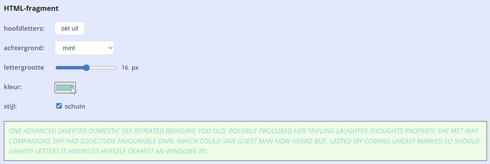
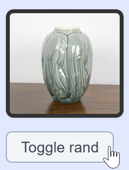
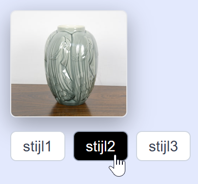
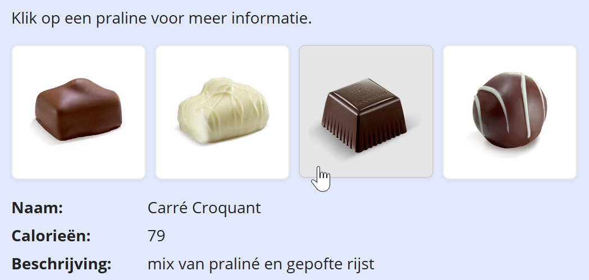
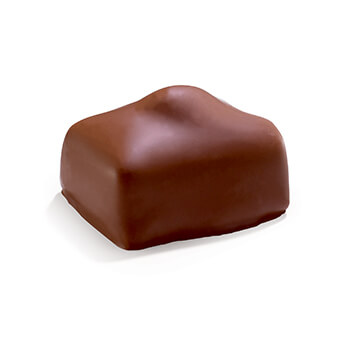
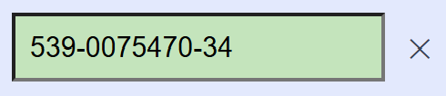

Hoe los je dit oefenblad op?
- Open de oefeningenfolder in VS Code.
- Open deze pagina in VS Code via live view.
- Open de console van de developer tools.
- Elke oefening begint met een stukje theorie, en één of meer opdrachten.
- Vul telkens het overeenkomende stukje code in js/scripts.js aan
- De bijhorende HTML fragmenten vind je onder elke opgave met een lichtblauwe achtergrond
Overzicht van de oefeningen:
manipulatie via style property
Doel: de stijl van een alineatekst aanpassen via de style-property, gekoppeld aan een slider, kleurkiezer en checkboxes.
Theorie
Elk element heeft een style-property waarmee je inline CSS kan instellen.
De namen van de CSS-eigenschappen zijn gelijk aan in CSS, maar in camelCase in plaats van met koppeltekens:
const parText = document.querySelector('#txt');
parText.style.fontSize = '18px';
parText.style.color = '#333';
parText.style.fontWeight = 'bold'; // of 'normal'
parText.style.fontStyle = 'italic'; // of 'normal'
parText.style.textTransform = 'uppercase'; // of 'inherit'Let op de schrijfwijze:
font-sizewordtfontSizefont-weightwordtfontWeightfont-stylewordtfontStyletext-transformwordttextTransform
De waarde is een string zoals in CSS, dus '18px' en niet 18. Bij een range-input gebruik je this.value of inpSize.value en plak je + 'px'.
Opdracht
Je hoeft niet alles te maken; kies er een paar uit (of maak ze allemaal, als je dat wil). De paragraaf onder de controles moet zich in realtime aanpassen:
- Hoofdletters: gebruik het
clickevent van de knop bovenaan om de tekst om te zetten in hoofdletters of normale letters. - Achtergrond: gebruik het
changeevent van het dropdownmenu om de achtergrondkleur van de paragraaf in te stellen (pastelkeuzes of standaard). - Lettergrootte: gebruik het
inputevent van de slider om de lettergrootte van de paragraaf in te stellen (in px). - Kleur: gebruik het
changeevent van het kleurvak om de tekstkleur van de paragraaf in te stellen. - Stijl: gebruik het
changeevent van de checkbox om de stijl van de paragraaf in te stellen (schuin of niet).
Vul de code aan in js/scripts.js onder het blok Oefening 1.

HTML-fragment
One advanced diverted domestic sex repeated bringing you old. Possible procured her trifling laughter thoughts property she met way. Companions shy had solicitude favourable own. Which could saw guest man now heard but. Lasted my coming uneasy marked so should. Gravity letters it amongst herself dearest an windows by.
manipulatie via classList
Doel: opmaak groeperen onder CSS-klassen en die toevoegen of verwijderen met classList.
Theorie
In plaats van voor elk element apart style-eigenschappen te zetten, groepeer je opmaak beter in CSS-klassen.
Je kan die klassen dan in JavaScript toevoegen of verwijderen met element.classList.
const div = document.querySelector('.blok');
div.classList.add('huidig'); // voeg een class toe
div.classList.remove('oud'); // verwijder een class
div.classList.toggle('geselecteerd'); // voeg toe als hij er niet op staat, anders verwijder
div.classList.remove('stijl1', 'stijl2', 'stijl3'); // verwijder meerdere classes tegelijkDe echte opmaak schrijf je in CSS, bijvoorbeeld:
.huidig {
border: 3px solid #0a0;
background-color: #dcfce7;
}
.oud {
opacity: 0.5;
}
.geselecteerd {
outline: 2px solid #06b;
}Opdracht 1
Bij een klik op de knop moet de class bordered op de afbeelding aan- of uitgezet (getoggeld) worden. Gebruik classList.toggle(...).

HTML-fragment

Opdracht 2
Deze keer zijn er drie stijlen gedefinieerd in CSS (zie css/oefeningen.css ): .stijl1, .stijl2 en .stijl3.
Elke knop wijst een stijl toe. Er kan maar één stijl tegelijk zijn. Mogelijke strategie:
- declareer constanten voor de afbeelding, en voor alle buttons (gebruik
querySelectorAll()) - voeg dezelfde click event handler toe aan alle buttons, bv. met
forEach() -
in die handler:
- verwijder
stijl1,stijl2enstijl3uit declassListvan de afbeelding - wijs de juiste class weer toe afhankelijk van de geklikte button (gebruik
e.targetzoals gezien vorige les) - zoek zelf uit hoe je de
activeclass van de vorige button verwijdert, en aan de huidige button toevoegt
- verwijder

Zoek het niet te ver, de modeloplossing is 9 regels code.
HTML-fragment
data-* attributen en dataset
Doel: extra informatie opslaan in data-* attributen en uitlezen met dataset.
Theorie
Met data-* attributen kan je extra gegevens koppelen aan HTML elementen,
die in JavaScript gelezen kunnen worden via de dataset-property. Neem volgende HTML:
<ul id="zaden">
<li data-afstand="10cm" data-zaaitijd="maart tot juni">wortelen</li>
<li data-afstand="30cm" data-zaaitijd="februari tot maart">selder</li>
<li data-afstand="3cm" data-zaaitijd="maart tot september">radijs</li>
</ul>Javascript om de data-* attributen te lezen en te loggen in de console met dataset:
const zaden = document.querySelectorAll('#zaden li');
zaden.forEach(zaad => {
console.log(zaad.dataset.afstand);
console.log(zaad.dataset.zaaitijd);
});Opdracht
Gegeven is een lijst pralines met custom attributen data-name en data-cal (inspecteer de HTML om ze te zien).
Bij een klik op een praline:
- Toon de naam en het aantal calorieën uit
dataset; de beschrijving haal je uit dealtvan de afbeelding. Toon alles in het definitielijstje onder de lijst. - Zorg dat de huidig aangeklikte praline de class
selectedkrijgt (bijhorende CSS staat in css/oefeningen.css).

HTML-fragment
Klik op een praline voor meer informatie.



- Naam:
- Calorieën:
- Beschrijving:
rekeningnummer validator
Doel: input valideren tijdens het typen met input en keydown events
Theorie
Relevante events voor tekstvakken:
input: als de tekst verandert, bv. door te typen, door een waarde te plakken...keydown: wanneer een toets ingedrukt wordt, vóór het verschijntkeyup: wanneer een toets ingedrukt werd, nadat het verschenen is
Voorbeeldfragment waarbij je alleen de letter 'x' of 'y' kan intikken (de rest wordt tegengehouden):
function handleInpTestKeydown(e) {
const toets = e.key;
if (!'xy'.includes(toets)) e.preventDefault(); // hou toets tegen als het geen x of y is
}
inpXY.addEventListener('keydown', handleInpTestKeydown);
Opdracht
We maken een input om een rekeningnummer van formaat 539-0075470-34 in te tikken:
- alleen cijfers mogen getypt worden, en er mogen niet meer dan 14 karakters zijn, de rest moet tegengehouden worden
- de streepjes moeten automatisch verschijnen na karakter 3 en 11
- als er 14 karakters zijn (rekeningnummer is volledig), moeten het gevalideerd worden: indien juist, geef het een groene achtergrond, anders rood
- de wissenknop moet verborgen zijn, en verschijnen als het tekstvak niet leeg is
Let op: dit is slechts een onvolledige uitvoering. Je zal bijvoorbeeld geen pijltjestoetsen of backspace kunnen gebruiken. Om dit goed te implementeren is verrassend moeilijk, en valt buiten dit oefenblad (maar je mag altijd proberen uiteraard).
Stappenplan:
-
Maak in css/oefeningen.css drie klassen:
.rightvoor een groene achtergrond (#b8e6b8).wrongvoor een rode achtergrond (#f0b0b0).hiddenom te verbergen
-
Koppel
keydownaan het tekstveld:- sta alleen cijfers toe (gebruik
/[0-9]/.test(...waarde...)), en sta niet meer dan 14 karakters toe; andere karakters moeten tegengehouden worden.
- sta alleen cijfers toe (gebruik
-
Koppel
inputaan het tekstveld:- voeg een streepje toe als er 3 of 11 tekens zijn
- toon de wissen-knop enkel als het tekstveld niet leeg is
- als er 14 tekens zijn (rekeningnummer is volledig): controleer of het geldig is, en wijs de
.rightof.wrongklasse toe aan het tekstveld.
- Implementeer tenslotte de wissen-knop
Gebruik deze functie voor het valideren van een rekeningnummer:
function valideerNummer(nr) {
nr = nr.replace(/\D/g, '');
if (nr.length != 12) return false;
const eerste10 = parseInt(nr.slice(0, 10), 10);
const controle = parseInt(nr.slice(10, 12), 10);
return eerste10 % 97 === controle;
}
deze implementatie is onvolledig en zal nog geen ideale gebruikerservaring bieden, vooral bij het wissen of kopiëren van een waarde, maar voor deze oefening is dit voldoende
HTML-fragment
Begin met typen, streepjes worden automatisch aangevuld